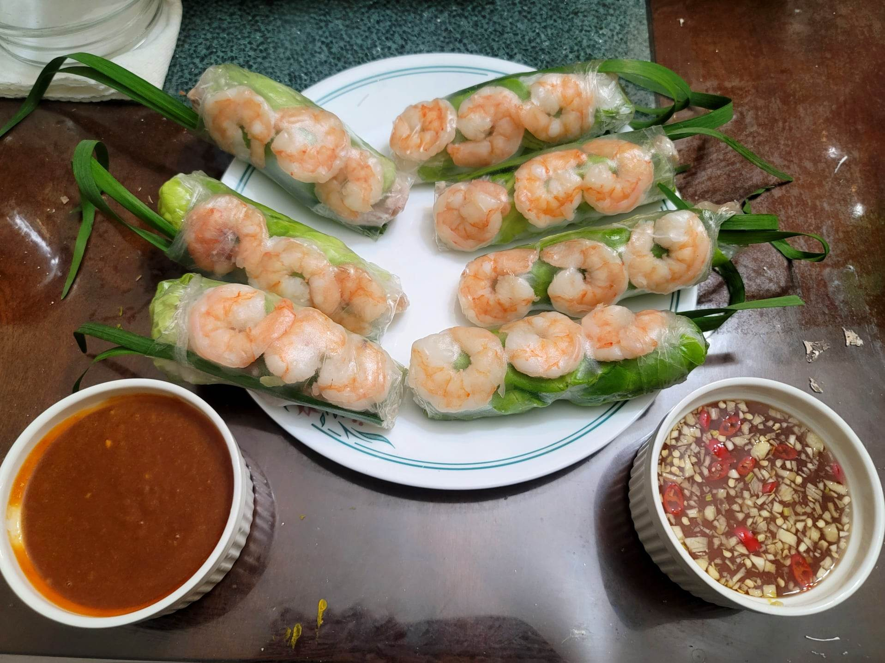

Gỏi Cuốn (Fresh Spring Rolls)

Ingredients:
Pork:
- 1/2 lb Boneless pork belly
- 1 Onion, halved
- 1 tsp Sugar
- 1 tsp Salt
Shrimp:
- 1/2 lb Shrimp, peeled
- 1/4 tsp Salt
Spring Rolls:
- 1/2 pack Dried spring roll wrapper, 8-9"
- 5~ oz Dried rice noodles or Dried bánh hỏi
- 2 heads Butter lettuce
- 1/2 bunch Mint
- 1/2 bunch chives
Peanut Sauce:
- 2 tbsp Canola oil
- 2 tbsp Garlic, minced
- 1/2 cup Hoisin sauce
- 3 tbsp Peanut butter
- 1/2 cup Water
- Optional: Sambal, to taste
- Optional: Roasted peanuts, chopped
Nước Chấm:
- 6 tbsp Water
- 2 tbsp Sugar
- 1 1/2 tbsp Lime juice
- 2 tbsp Fish sauce
- 1 clove Garlic, minced
- 1 Bird's eye chili, thinly sliced
Instructions:
- Prepare one or both of the sauces. To prepare, add the sauce ingredients to a bowl and stir to combine.
- To prepare the pork, add all the pork ingredients to a small pot with enough water to cover by an inch. Bring to a boil and then reduce to medium to let cook for about 25-30 minutes or until tender. Then remove from the liquid and let cool. Once cool, slice thinly.
- For the shrimp, add the shrimp, salt, and some water to a small pot. Bring to a boil and let cook for about 1-3 minutes or until cooked through. Remove the shrimp from the pot and let cool. Once cool, cut the shrimp in half along the body.
- Prepare the rice noodles according to package instructions. Transfer to a bowl of cold water to stop the cooking process.
- To assemble, take a sheet of rice paper and dip very briefly. It will continue to soften even after removed from the water. Lay the rice paper onto a plate. Towards the center of the lower half of the rice paper, begin to layer the lettuce, noodles, mint and more lettuce, and then pork. Tuck and roll the rice paper over the fillings and about halfway up the rice paper. Then fold in the sides and add the shrimp and chives so that they would be visible once done wrapping. Then continue to roll and wrap the rice paper the rest of the way. Repeat this process with the rest of the ingredients.
- Serve immediately with the dipping sauce. If not eating right away, wrap the spring rolls individually with plastic wrap before storing to prevent them from sticking to each other.